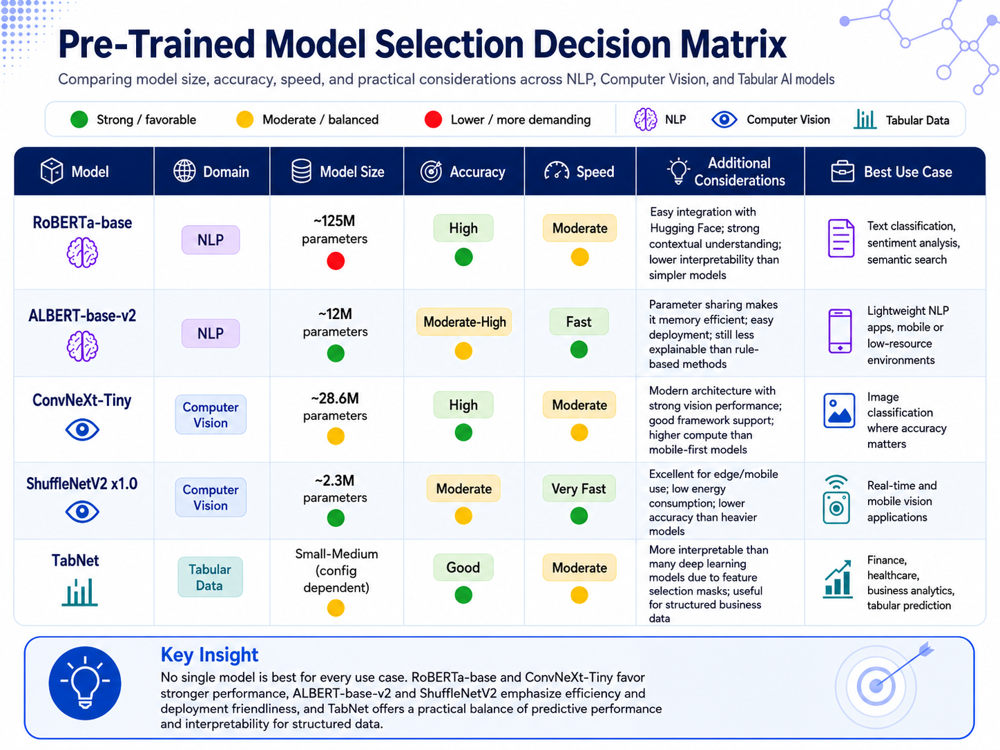

Workshop 5.4 · Model Selection
Pre-Trained Model Selection Decision Matrix
This artifact compares selected pre-trained models across natural language processing, computer vision, and tabular data. The decision matrix highlights how model size, accuracy, speed, interpretability, and deployment context influence the best model choice for a real-world AI/ML application.
Visual Artifact
The infographic presents a color-coded model selection matrix. It compares five models across size, accuracy, speed, practical considerations, and best-fit use cases. Green, yellow, and red indicators make the trade-offs easier to scan, while domain icons separate NLP, computer vision, and tabular AI models.
Because the visual artifact contains the full decision matrix, the remaining sections explain the selection rationale, trade-offs, and recommendations rather than repeating the same table.

Description
Selecting a pre-trained AI model is not only about choosing the model with the highest benchmark score. In practice, the best model depends on the task, deployment environment, available compute resources, expected latency, integration needs, and explainability requirements. A model that performs well in a benchmark may not be appropriate for a mobile application, real-time system, or regulated business workflow.
This artifact compares RoBERTa-base, ALBERT-base-v2, ConvNeXt-Tiny, ShuffleNetV2 x1.0, and TabNet. I selected these models to avoid only using the most common examples and to show a broader understanding of model trade-offs across text, image, and structured data problems.
Objective
The objective of this artifact is to demonstrate how pre-trained models can be evaluated using a practical decision framework. The matrix compares each model by model size, accuracy, speed, and additional considerations such as ease of integration, energy use, and interpretability. This helps connect technical model characteristics to real-world engineering and business decisions.
Selection Methodology
I selected models from three AI/ML domains: NLP, computer vision, and tabular data. For NLP, I chose RoBERTa-base and ALBERT-base-v2 because they show the contrast between stronger language understanding and parameter-efficient model design. For computer vision, I chose ConvNeXt-Tiny and ShuffleNetV2 x1.0 because they show the difference between a modern accuracy-focused vision model and a lightweight edge-friendly model. For tabular data, I chose TabNet because it combines deep learning with an interpretability approach based on feature selection masks.
The data points used in the matrix came from model papers, model cards, and official documentation. Since benchmarks differ by domain, the matrix does not treat NLP accuracy, ImageNet accuracy, and tabular-data performance as directly interchangeable. Instead, it uses ratings such as high, moderate, and fast to summarize each model within its own domain and intended deployment context.
Decision Matrix Summary
RoBERTa-base is a strong NLP model for language understanding tasks such as text classification, sentiment analysis, and semantic search. It provides strong contextual understanding, but its larger parameter count makes it more resource-intensive than smaller NLP models. ALBERT-base-v2 uses parameter-sharing techniques to reduce memory requirements, making it a better fit when deployment efficiency is more important than maximizing performance.
ConvNeXt-Tiny is a modern computer vision model that offers strong image-classification performance while remaining smaller than many larger vision models. ShuffleNetV2 x1.0 is designed for efficiency, making it a better option for edge devices, mobile applications, and real-time vision tasks where low latency and lower energy usage matter.
TabNet is included as the tabular-data model because it supports structured prediction tasks while offering a stronger interpretability story than many deep neural networks. Its feature selection masks help identify which input features influence predictions, which is useful for business analytics, finance, healthcare, and other structured-data use cases.
Analysis and Recommendations
For NLP applications where accuracy and contextual understanding are the priority, RoBERTa-base is a strong choice. It is useful for text classification, sentiment analysis, semantic search, and other language understanding tasks. However, if the application needs a smaller footprint or faster deployment, ALBERT-base-v2 is the better option because it is more memory efficient while still providing strong language modeling capability.
For computer vision, ConvNeXt-Tiny is recommended when image-classification performance is the main priority and the system can support moderate compute. ShuffleNetV2 x1.0 is the better choice for mobile, embedded, and edge AI applications where speed, energy use, and deployment simplicity are more important than maximum accuracy.
For tabular-data problems, TabNet is a useful option when a project needs both predictive performance and some interpretability. It is especially relevant for structured datasets in business, finance, healthcare, and analytics workflows where stakeholders may need to understand which features influenced the model's output.
Tools and Tech Used
- GitHub Pages
- HTML
- CSS
- JavaScript
- ChatGPT
- Pre-trained model documentation
- Model cards and research papers
- Decision matrix design and visual comparison
Value Proposition
This artifact demonstrates my ability to evaluate AI/ML models from a practical deployment perspective. Instead of focusing only on benchmark accuracy, it compares models using the broader factors that matter in real systems: size, speed, compute requirements, integration, energy use, and interpretability.
The unique value of this artifact is that it connects model selection to engineering judgment. It shows that the right model depends on the domain, problem constraints, infrastructure, latency requirements, and the level of explanation needed by users or stakeholders.
Reflection
This assignment helped me think about pre-trained models as deployment choices rather than only research benchmarks. I learned that a model with strong accuracy may still be the wrong choice if it is too slow, too expensive to run, difficult to integrate, or too hard to explain in the target environment.
One of my biggest takeaways was that model selection is a trade-off. RoBERTa-base and ConvNeXt-Tiny favor stronger performance, while ALBERT-base-v2 and ShuffleNetV2 emphasize efficiency and deployment friendliness. TabNet adds another perspective by showing how interpretability can become an important selection criterion for structured data.
This artifact expands my portfolio by showing a skill set focused on evaluation and decision-making. It demonstrates that I can compare AI/ML models across domains and explain why different models fit different practical scenarios.
References
Arik, S. Ö., & Pfister, T. (2021). TabNet: Attentive interpretable tabular learning. AAAI Conference on Artificial Intelligence. https://arxiv.org/abs/1908.07442
Hugging Face. (n.d.). ALBERT Base v2 model card. https://huggingface.co/albert/albert-base-v2
Hugging Face. (n.d.). RoBERTa base model card. https://huggingface.co/FacebookAI/roberta-base
Lan, Z., Chen, M., Goodman, S., Gimpel, K., Sharma, P., & Soricut, R. (2019). ALBERT: A lite BERT for self-supervised learning of language representations. https://arxiv.org/abs/1909.11942
Liu, Y., Ott, M., Goyal, N., Du, J., Joshi, M., Chen, D., Levy, O., Lewis, M., Zettlemoyer, L., & Stoyanov, V. (2019). RoBERTa: A robustly optimized BERT pretraining approach. https://arxiv.org/abs/1907.11692
PyTorch. (n.d.). ConvNeXt Tiny — TorchVision documentation. https://docs.pytorch.org/vision/main/models/generated/torchvision.models.convnext_tiny.html
PyTorch. (n.d.). ShuffleNetV2 x1.0 — TorchVision documentation. https://docs.pytorch.org/vision/main/models/generated/torchvision.models.shufflenet_v2_x1_0.html
OpenAI. (2026). ChatGPT [Large language model]. https://chatgpt.com/